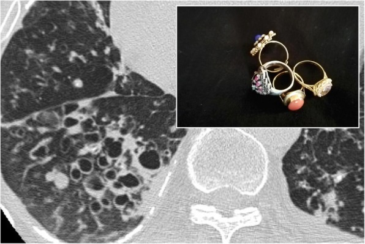
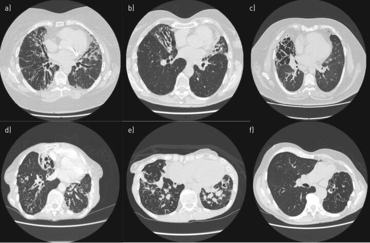
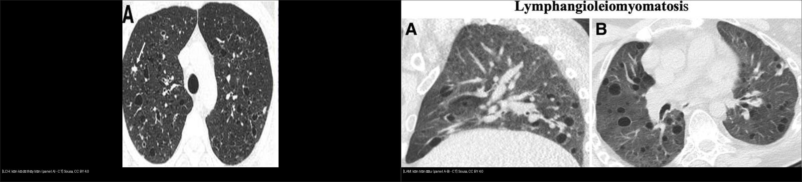
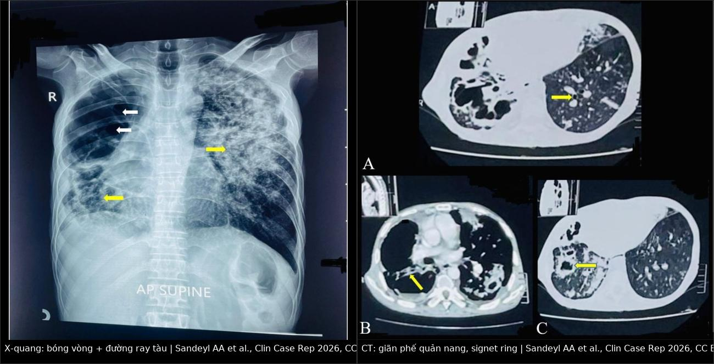
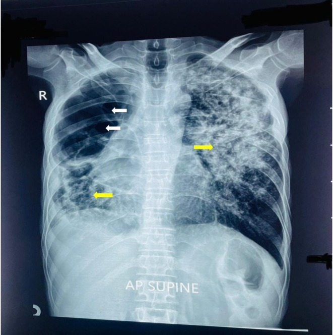
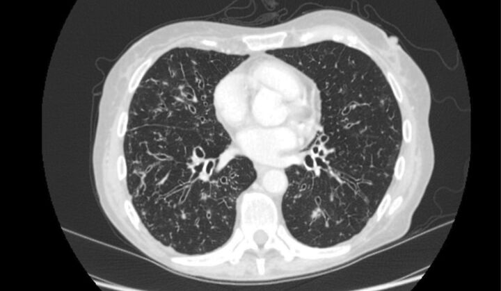

050 — Giãn phế quản người lớn: thể hình thái, nguyên nhân, phân độ nặng & kén khí / Bronchiectasis & Cystic lung
Tags: pattern:gian-phe-quan pattern:ken-khi vung:duong-tho vung:phoi protocol:HRCT score:Reiff score:BSI score:FACED
Mức chắc chắn (certainty): tổng hợp y văn (literature synthesis) — nhóm tự biên từ y văn mở (Eur Respir Rev 2018; Clin Case Rep 2026; Front Med 2026), chưa gắn ca nguyên văn đơn lẻ.
1. Tổng quan — PQ giãn khi nào, TẠI SAO giãn không hồi phục + ngưỡng nhẫn ngọc
- Giãn phế quản (bronchiectasis): giãn không hồi phục của phế quản (PQ) do phá hủy sụn – cơ – sợi chun thành PQ, kèm viêm mạn tính đường thở. Vòng xoáy bệnh sinh (Cole): ứ nhầy → nhiễm khuẩn → bạch cầu trung tính + elastase/protease → phá thành → giãn thêm → ứ nhầy.
- TẠI SAO thấy nhẫn ngọc (signet-ring): PQ và động mạch (ĐM) đi kèm bình thường cùng cỡ và nhỏ dần ra ngoại vi; khi sợi chun mất, PQ không thuôn nên mặt cắt ngang là vòng lớn cạnh chấm ĐM nhỏ. Nhẫn ngọc = tỷ số phế quản–động mạch (broncho-arterial ratio) > 1,0 ở người lớn (trẻ em > 0,8; người già/vùng cao nguyên tới 1,5 vẫn có thể bình thường).
- Ba tiêu chuẩn HRCT (Naidich, dùng tới nay): (1) PQ > ĐM kèm; (2) mất thuôn ra ngoại vi (lack of tapering); (3) thấy PQ cách màng phổi sườn < 1 cm**. Thêm **dày thành PQ > 0,5 mm (hoặc > 1/3 đường kính lòng) là dấu viêm hoạt động.
- TẠI SAO "đường ray tàu" (tram-track): cắt dọc PQ giãn thành dày → hai đường song song; cắt ngang → nhẫn ngọc. Cùng một tổn thương, khác mặt cắt.
- TẠI SAO thể nang: phá hủy lan tới tiểu PQ + tụ mủ → các túi khí chùm nho, có thể có mức khí–dịch; thành mỏng nhưng không phải kén thật (kén thật ≤ 2 mm, bài này mục 2).
- X-quang kém nhạy (bóng vòng, đường ray tàu, dày thành) — HRCT là chuẩn; bình thường X-quang không loại trừ.

PQ giãn thành dày cạnh ĐM cùng cỡ + hình nhẫn đối chiếu. Nguồn: Chiarenza et al., Insights into Imaging 2019 Fig. 30, CC BY 4.0.2. Mẫu hình + chẩn đoán phân biệt theo thể và theo vị trí (gamut)
2a. Theo hình thái — 3 thể của Reid (mức độ phá hủy tăng dần)
- Hình trụ (cylindrical/tubular): PQ giãn đều, thẳng, không thuôn, đường ray tàu; mất thuôn là dấu sớm nhất.
- Dạng varicose (chuỗi hạt): thành phình từng đoạn rồi thắt — "chuỗi ngọc/string of pearls"; đây là mốc chuyển tiếp, tiên lượng nặng hơn thể trụ.
- Dạng nang (cystic/saccular): túi khí chùm nho, thành mỏng, thường có mức dịch; thể nặng nhất, hay kèm P. aeruginosa.

Cùng một bài: a) thể trụ thùy dưới, b) varicose thùy dưới, c) thể nang thùy dưới phải, d) nang + tree-in-bud + nút nhầy, e) nút nhầy + tree-in-bud, f) varicose thùy trên và lưỡi. Nguồn: Contarini M, Finch S, Chalmers JD, Eur Respir Rev 2018 Fig. 5, CC BY-NC 4.0.2b. Theo phân bố → gợi ý nguyên nhân
- Thùy trên ưu thế: lao cũ (xơ đỉnh + co kéo), xơ nang (CF), ABPA (nhưng trung tâm), bệnh phổi do thuốc/hít.
- Thùy dưới ưu thế: sau nhiễm (ho gà, sởi, virus), vô căn (idiopathic) hay gặp nhất ở đây, viêm khớp dạng thấp, bệnh ruột viêm, hít sặc (phải dưới), suy giảm miễn dịch.
- Trung tâm (quanh rốn phổi): ABPA (nút nhầy "ngón tay trong găng"), Mounier-Kuhn (khí quản giãn > 30 mm ở nam / > 27 mm ở nữ).
- Ngoại vi hai đáy, nền phổi xơ: giãn PQ do co kéo (traction) — không phải giãn PQ nhiễm trùng; đừng gắn nhãn "bronchiectasis" rồi điều trị như bệnh đường thở.
- Sau khi tầm soát đủ (mục 4), khoảng 1/4–1/3 ca vẫn vô căn — ghi "vô căn" là chẩn đoán loại trừ, không phải bỏ qua tầm soát.
2c. Gamut kén khí (phần phân biệt với giãn PQ thể nang)
- Kén tròn đều 2 phổi, nữ trẻ + tràn khí tái phát: LAM (lan tỏa, không chừa vùng).
- Kén kỳ dị + nốt, thùy trên, chừa đáy, hút thuốc: LCH (nốt → kén theo thời gian, bỏ thuốc có thể lui).
- Kén cạnh vách + tiền sử gia đình + u da/thận: BHD (kén đáy, cạnh trung thất).
- Vùng giảm đậm độ không thành + chấm ĐM trung tâm (central dot): khí phế thũng trung tâm tiểu thùy, không phải kén.
- Giãn PQ thùy giữa/lưỡi + hen + nút nhầy: ABPA (finger-in-glove).

Trái: LCH — kén hình thù kỳ dị ưu thế trên. Phải: LAM — kén tròn đều lan tỏa. Nguồn: Sousa et al., CC BY 4.0. Ảnh ghép letterbox (panel đã cắt có ghi rõ).3. Bảng so sánh phân biệt
| Thực thể (entity) | Hình ảnh điển hình (HRCT) | Chốt vào (rule-in) | Chốt loại (rule-out) | Gợi ý xác nhận |
|---|---|---|---|---|
| Giãn PQ thể trụ | Nhẫn ngọc > 1,0, mất thuôn, đường ray tàu, thành dày > 0,5 mm | PQ > ĐM kèm + thấy PQ < 1 cm từ màng phổi | PQ = ĐM và thuôn đều ra ngoại vi → bình thường | Đờm nuôi cấy, IgG/IgE, CT lặp sau 3–6 tháng |
| Giãn PQ dạng varicose | Thành phình–thắt từng đoạn (chuỗi hạt) | Chuỗi hạt dọc PQ + nút nhầy | PQ thẳng đều, không thắt → thể trụ | Như trên; tiên lượng nặng hơn thể trụ |
| Giãn PQ thể nang | Chùm nang, thành mỏng, mức khí–dịch, có khi mất thể tích thùy | Chùm nang + mức dịch + P. aeruginosa mạn | Nang ĐƠN ĐỘC thành mỏng không thông với cây PQ → kén thật | Cấy đờm (kể cả NTM), cân nhắc phẫu thuật nếu khu trú |
| Giãn PQ giả (pseudobronchiectasis) | PQ giãn sau viêm phổi cấp, thành dày, hồi phục | Bệnh cảnh viêm phổi ≤ 3 tháng + không có bệnh sử ho khạc mạn | Vẫn giãn sau 6 tháng → giãn thật | CT lại sau 3–6 tháng trước khi dán nhãn |
| Giãn PQ do co kéo (traction) | PQ giãn trong vùng xơ, bờ không đều, không nút nhầy | Xơ + tổ ong + giãn PQ ngoại vi hai đáy | Giãn PQ đơn thuần không xơ → nguyên phát | Đọc cùng mô kẽ (bài 035); điều trị bệnh xơ, không phải KS dài |
| ABPA | Giãn PQ trung tâm + nút nhầy ngón tay-găng, thùy trên | IgE toàn phần ↑ + IgE/IgG A. fumigatus + hen | Giãn PQ ngoại vi lan tỏa → không phải ABPA | IgE, RAST, thử corticoid |
| Mounier-Kuhn | Khí quản > 30 mm (nam)/ > 27 mm (nữ) + giãn PQ 2 đáy | Khí quản giãn + túi thừa khí quản | Khí quản bình thường < 27 mm | CT ngực không cản quang, đo đường kính |
| LCH | Kén kỳ dị + nốt thùy trên, chừa đáy, hút thuốc | Nốt + kén trên + chừa đáy + hút thuốc | Kén tròn đều lan tỏa nữ trẻ → LAM | Bỏ thuốc theo dõi lui; sinh thiết khi không điển hình |
| LAM | Kén tròn đều mỏng lan tỏa 2 phổi, nữ trẻ, tràn khí | Nữ trẻ + kén đều + tràn khí tái phát | Kén kỳ dị trên + hút thuốc → LCH | VEGF-D, sirolimus |
| Khí phế thũng TTT | Vùng giảm đậm độ KHÔNG thành + chấm ĐM trung tâm, trên | Central dot + hút thuốc + không thành | Có thành ≤ 2 mm → kén thật | Chức năng hô hấp, cai thuốc |
| Tổ ong (UIP) | Xếp tầng dưới màng phổi đáy, chung vách dày | Tầng + đáy + vách dày (nối bài 035) | Rải rác + thành mỏng → LAM/LCH | (nối bài 035) |

Trái: X-quang — bóng vòng/đường ray tàu, mất thể tích trái, nhiều bóng khí. Phải: HRCT cùng ca — giãn PQ nang + bóng khí thùy trên trái, mũi tên vàng chỉ nhẫn ngọc. Nguồn: Sandeyl AA et al., Clin Case Rep 2026, CC BY 4.0. Ảnh ghép letterbox, không crop.4. Protocol chụp + phân độ nặng + điều trị
4a. Protocol HRCT đường thở
- HRCT xoắn ốc lát mỏng 0,6–1,25 mm, thì hít vào tối đa, cửa sổ phổi; không cản quang thường quy.
- Thêm thì thở ra khi nghi bệnh tiểu PQ (bẫy khí, mosaic) và tư thế nằm sấp khi nghi giãn PQ ở vùng phụ thuộc (phân biệt xẹp phụ thuộc).
- CTA chỉ khi: ho máu nhiều (tìm ĐM phế quản giãn/giả phình), nghi u, nghi thuyên tắc.
- Đo broncho-arterial ratio trên mặt cắt ngang thật của PQ (tránh cắt chéo); đếm số thùy tổn thương (6 thùy, lưỡi tính riêng).
- Điểm Reiff (CT): mỗi thùy 0 = không giãn, 1 = một PQ giãn, 2 = nhiều PQ giãn, 3 = thể nang → tổng 0–18; theo dõi tiến triển/đáp ứng.
4b. Phân độ nặng — chọn 1 thang, ghi rõ phiên bản
- BSI (Bronchiectasis Severity Index, Chalmers 2014) — 9 biến số: tuổi, BMI, FEV1 % dự đoán, số đợt cấp/năm, nhập viện trước đó, khó thở MRC, P. aeruginosa mạn, vi khuẩn khác, ≥ 3 thùy hoặc có nang. 0–4 nhẹ · 5–8 vừa · ≥ 9 nặng.
- FACED (Martínez-García 2014) — 5 biến số, 0–7: FEV1 (≥ 50% = 0; 30–49% = 1; < 30% = 2), Age (< 70 = 0; ≥ 70 = 1), Colonization P. aeruginosa (1), Extension ≥ 3 thùy hoặc thể nang (1), Dyspnoea mMRC 0–2 = 0, 3–4 = 1. 0–2 nhẹ · 3–4 vừa · 5–7 nặng.
- Đợt cấp (exacerbation): nặng lên ≥ 3 trong 6 triệu chứng (ho, lượng đờm, mủ đờm, khó thở, khò khè, mệt) trong ≥ 48 giờ và thầy thuốc quyết định dùng kháng sinh; cấy đờm trước khi dùng KS, điều trị 14 ngày theo ERS 2017.
4c. Sơ đồ xử trí sau khi HRCT xác nhận
flowchart TD
A[HRCT: PQ > DM + mat thuon] --> B{Co xo phoi / ton thuong keo?}
B -->|Co| C[Gian PQ do co keo - dieu tri benh mo ke, khong KS dai]
B -->|Khong| D[Tam soat nguyen nhan: IgG/IgA/IgM, IgE + Aspergillus, cay dom NTM, mo hoi CI, alpha-1, noi soi xoang]
D --> E{Tinh diem BSI hoac FACED}
E -->|Nhe 0-4 / 0-2| F[Vat ly tri lieu duong tho + vaccine + dieu tri dong mac]
E -->|Vua - nang| G[Them KS dai khi tren 3 dot cap moi nam - loai NTM va QTc - hoac KS dang hit neu P. aeruginosa man]
G --> H{Ho mau lon / benh khu tru that bai?}
H -->|Co| I[CTA + nut mach phe quan / phau thuat cat thuy]
H -->|Khong| J[Theo doi 6-12 thang: dom, FEV1, so dot cap]
4d. Điều trị — ngưỡng cụ thể (ERS 2017 + cập nhật)
- Vật lý trị liệu đường thở 2 lần/ngày (kỹ thuật chu kỳ chủ động) — nền tảng ở mọi bệnh nhân có đờm.
- Dung dịch ưu trương NaCl 7% 4 mL × 2/ngày hoặc mannitol 400 mg hít khi đờm dai.
- Kháng sinh dài hạn (macrolide): cân nhắc khi ≥ 3 đợt cấp/năm — azithromycin 250–500 mg × 3 ngày/tuần; loại trừ NTM trước, kiểm tra QTc và thính lực.
- Kháng sinh hít (tobramycin, colistin) khi P. aeruginosa mạn + ≥ 3 đợt cấp/năm.
- Ho máu lớn (> 300 mL/24 giờ hoặc > 100 mL/giờ): CTA → nút mạch phế quản (nguồn ~90% từ ĐM phế quản giãn).
- Phẫu thuật cắt thùy: chỉ khi bệnh khu trú một thùy, thất bại điều trị nội khoa, hoặc ho máu tái diễn không nút được.
- Điều trị nguyên nhân: thay IgG, corticoid/kháng nấm trong ABPA, thuốc CFTR trong xơ nang; vaccine cúm + phế cầu.
- Đang nổi: brensocatib (ức chế DPP-1) — thử nghiệm ASPEN cho thấy giảm đợt cấp ở giãn PQ không do CF; chưa thay thế phác đồ chuẩn.
5. Biến thể bình thường và cạm bẫy
- PQ cắt chéo trông to giả — chỉ đo mặt cắt ngang thật, và so với ĐM kèm cùng lát.
- Người già/vùng cao: ratio tới 1,5 vẫn bình thường — đừng gọi giãn hàng loạt.
- Thì thở ra / vùng phụ thuộc: PQ và mô phổi xẹp phụ thuộc có thể giả giãn; chụp lại hít vào + nằm sấp trước khi kết luận.
- Nhầy lấp PQ giả nốt/khối — chụp lại sau vật lý trị liệu hoặc sau 4–6 tuần.
- Giãn PQ sau viêm phổi (pseudobronchiectasis) hồi phục trong 3–6 tháng → luôn có mốc chụp lại trước khi gắn bệnh mạn tính.
- Traction bronchiectasis bị gọi thành bronchiectasis: không có nút nhầy, bờ ngoằn ngoèo, luôn kèm xơ — điều trị sai hướng nếu coi là bệnh nhiễm trùng đường thở.
- Bỏ sót NTM khi chỉ cấy 1 mẫu đờm — cần 2–3 mẫu trước khi dùng macrolide dài hạn (nguy cơ kháng thuốc).
6. Tự lượng giá — Blind Quiz
Ca 1 — Nam 60 tuổi, lao phổi điều trị không đầy đủ 6 năm, ho khạc đờm vàng hôi 3 tuần, khó thở tăng. Nhìn X-quang rồi CT, mô tả trước.

- Hỏi: bóng vòng và đường ray tàu ở đâu? Mất thể tích bên nào? Cần chụp gì tiếp và tìm vi khuẩn nào?
Bấm để hiện đáp án (findings + chẩn đoán)
- Findings: mờ không đồng nhất + nhiều bóng khí/bóng vòng thùy trên trái, co kéo trung thất và mất thể tích trái; đường ray tàu hai đáy. HRCT cùng ca: giãn PQ nang có nhẫn ngọc (mũi tên vàng) + bóng khí lớn.
- Chẩn đoán: giãn phế quản sau lao (post-TB structural lung disease) + đợt cấp nhiễm khuẩn. Cấy đờm mọc P. aeruginosa + S. pneumoniae; điều trị KS theo kháng sinh đồ.
- Vì sao: lao phá hủy sụn–sợi chun thành PQ và gây xơ co kéo → giãn không hồi phục; đờm vàng hôi = nhiễm khuẩn hoạt động, không phải di chứng đơn thuần.
- Nguồn ảnh: Sandeyl AA et al., Clin Case Rep 2026, CC BY 4.0 (ca 60 tuổi, lao 6 năm).
Ca 2 — HRCT: PQ giãn + nốt trung tâm tiểu thùy dạng cành cây. Phân loại thể và gợi ý nguyên nhân.

- Hỏi: thể giãn PQ nào? Dấu "nụ trên cành" nói gì về hoạt tính bệnh?
Bấm để hiện đáp án
- Thể trụ (PQ thẳng, không thuôn, thành dày) + tree-in-bud hai đáy và thùy giữa.
- Tree-in-bud = mủ/nhầy lấp tiểu PQ → bệnh đang hoạt động, cần cấy đờm (lao, MAC, H. influenzae) và tăng vật lý trị liệu; không phải "sẹo cũ".
- Nguồn ảnh: Contarini M et al., Eur Respir Rev 2018 Fig. 4, CC BY-NC 4.0.
Ca 3 — Cùng một bài có 6 panel HRCT. Hãy xếp mỗi panel vào thể trụ / varicose / nang trước khi mở đáp án.
- Hỏi: panel nào là thể nang? Panel nào có nút nhầy? Thể nào tiên lượng nặng nhất?
Bấm để hiện đáp án
- a) thể trụ thùy dưới · b) varicose thùy dưới · c) thể nang thùy dưới phải · d) nang + tree-in-bud + nút nhầy (có hang thùy dưới phải) · e) nút nhầy + tree-in-bud · f) varicose thùy trên và lưỡi.
- Thể nang tiên lượng nặng nhất: phá hủy nhiều nhất, hay kèm P. aeruginosa mạn, Reiff cao hơn và đợt cấp nhiều hơn.
- Nguồn ảnh: Contarini M, Finch S, Chalmers JD, Eur Respir Rev 2018 Fig. 5, CC BY-NC 4.0.
Bài liên quan chéo
- 001 – Tổng quan hệ Ngực
- 031 – Viêm phổi mẫu hình (tree-in-bud, lao)
- 035 – Xơ mô kẽ UIP vs NSIP (tổ ong vs kén, traction)
- 051 – Tiểu phế quản & khảm tưới máu
- 052 – Khí phế thũng vs đa kén khí
- 040 – Tràn dịch màng phổi (biến chứng mủ màng phổi)
Không dùng để chẩn đoán độc lập khi chưa có người hướng dẫn.